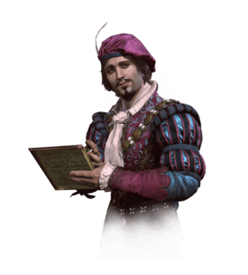
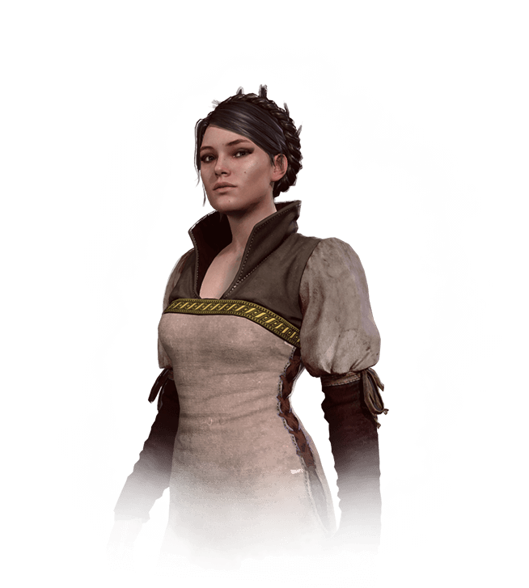

Karakters
-
Ciri
Ciri, ook wel Child of Destiny genoemd, wordt in het algemeen beschreven als een wapen dat de mogelijkheid heeft om de wereld waarin zij leeft te vernietigen. Ook zijn er banden met haar als een leerling van Geralt toen ze jonger was. Haar Witcher training, in combinatie met de magische vaardigheden, markeert haar als een van de meest krachtige individuen ter wereld.
-
Eskel
Eskel was een kalme en redelijke witcher en Geralt's vriend uit zijn jeugd en, volgens Ciri, leek hij zelfs op hem, afgezien van haarkleur en het lange litteken dat zijn wangen misvormde. Ze zijn samen opgevoed in Kaer Morhen en hebben samen deelgenomen aan de proeven.
-
Yennefer
Yennefer, geboren op Belleteyn in 1173, was een tovenares die in Vengerberg woonde, de hoofdstad van Aedirn. Ze was Geralt van Rivia's ware liefde en een moederfiguur voor Ciri, die ze als een dochter zag, zodanig dat ze er alles aan deed om het meisje te redden en haar te beschermen tegen kwaad.
-
Keira
In 1267 diende Keira als adviseur van koning Foltest toen zij en andere magiërs in het noorden leerde dat sommige van hun mede magiërs van plan waren om de Brotherhood of Sorcerers voor Nilfgaard te verraden.
-
Vesemir
Vesemir was de oudste en meest ervaren witcher bij Kaer Morhen in de 13e eeuw en trad hij op als een vaderfiguur voor Geralt en de andere heksen. Zoals veel van de andere heksen, bracht hij elke winter door in het fort en begaf zich op het pad toen de lente aanbrak.
-

Dandelion
Dandelion is een bard, een dichter, een professor, een spion en een heer. Hij studeerde op Oxenfurt, waar zijn favoriete vak geografie was. Vanwege het feit dat de boeken voor die klas groot genoeg waren om de wodka achter zich te verbergen.
-
Vernon
Vernon Roche is de commandant van de Blue Stripes, speciale troepen van het Temerische leger, die Geralt helpt in The Witcher 2: Assassins of Kings. Als Temerian houdt hij zijn koning, Foltest, hoog in het vaandel. Hij is ook een capabele jager.
-

Ves
Ves is lid van de elite groep van speciale groepen van Blue Stripes. Zij is de enige vrouw onder het bevel van Vernon Roche. Ze is ook bekend als Bianka in andere lokalisaties, zoals in het Russisch, en behoudt deze naam in de spelbestanden.
-
Lambert
De jongste onder de heksen van Kaer Morhen, en misschien de laatste ooit getraind binnen zijn muren, Lambert had zijn hakten vele malen bewezen, nadat hij vele machtige beesten had opgejaagd en bijna alle continenten doorkruist meerdere keren over.
-
Sylvia
Syanna, is de oudere zus van de hertogin van Toussaint, Anna Henrietta, en is dus een neef van Emhyr (van een onbekende graad). Ze was een van de meisjes die ook het grote ongeluk had toen ze werd namelijk geboren tijdens een totale eclips en wordt beschouwd als te worden beïnvloed door de zogenaamde vloek van de zwarte zon.
-
Phillip
-
Phillip diende in verschillende oorlogen en vocht gedurende zijn leven voor Temeria. Tijdens de Slag om Anchor nam hij een speer in de schouder en werd hij door Anna verzorgd. Nadat hij hersteld was, vroeg hij haar om met hem te trouwen en het paar leek gelukkig te zijn en verwelkomde snel een meisje, Tamara. Kort nadat ze was geboren, werd Phillip echter naar Cidaris gestuurd om in een nieuwe oorlog te vechten, deze keer om koning Ethain te helpen namens King Foltest. Omdat hij maar zelden thuis was, wendde Phillip zich tot drinken en werd hij er al snel zo afhankelijk van. Zelfs als hij thuis was, kon hij niet stoppen met drinken.
-
Triss
Triss Merigold van Maribor was een legendarische Temeriaanse tovenares uit de 13e eeuw. Ze werd door haar tijdgenoten Veertiende van de Heuvel genoemd omdat ze ten onrechte dacht te zijn gedood tijdens de Slag om de Sodden-heuvel. Ze ging de geschiedenis in als Merigold de Vreesloze. Een lid van de koninklijke raad van koning Foltest samen met Fercart en Keira Metz, evenals een van de oprichters van de Lodge of Sorceresses, was zij het grootste deel van haar leven betrokken bij de politiek.
-
Morvran
Morvran Voorhis - Keizer van Nilfgaard, opvolger van Emhyr var Emreis in de sage. Afkomstig uit het Huis van Voorhis was hij de zoon van Prins Voorhis en ten opzichte van Emhyr op zowel moeder- als vaderskant.
-
Zoltan
Zoltan Chivay was een dwerg, een veteraan van de tweede Nilfgaard-oorlog, en een vriend van de heks Geralt. Ze ontmoetten elkaar voor het eerst toen Geralt en zijn gezelschap vanuit Brokilon richting de Yaruga-rivier gingen, maar de dwerg adviseerde hen om zich bij zijn gezelschap aan te sluiten en naar het oosten te gaan. Zoltan zou op zijn minst halverwege de vijftig zijn geweest ten tijde van de bijeenkomst. Het is van Zoltan dat Geralt zijn zwaard ontving
-

Anabelle
Anabelle was een dochter van Vserad, heer van Velen. Ze was erg verliefd op de plaatselijke visser, Graham, maar haar vader keurde hun relatie af. Tijdens de vorige Nilfgaardiaanse invasie vluchtte ze met haar familie om te schuilen in de toren van een magiër op Fyke Isle.
-
Priscilla
Priscilla is een dichter en romantisch, die de artiestennaam "Callonetta" heeft. Ze is een vriendin van Dandelion en haar triomftocht door concerten heeft haar eindelijk van Lan Exeter, Pont Vanis, via Tretogor en Caelf naar Novigrad gebracht. Geralt ziet haar voor het eerst The Wolven Storm in The Kingfisher Inn zingen.